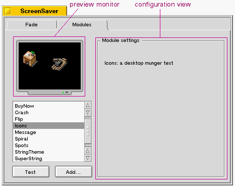

| Screen Saver Table of Contents | Screen Saver Index |
If you've installed your screen saver module in the right place (see "Building and Installing your Add-on"), the ScreenSaver preferences panel will automatically find it and, at the user's request, display a preview of your saver. It does this by loading your add-on and calling your BScreenSaver's hook functions.
As shown below, The panel displays two views that you can draw into: a preview monitor that displays a miniature version of your screen saver, and a configuration view that you can fill with controls, credits, and so on.

The hook functions that give you access to these views are:
Note that it's possible for your screen saver module to be loaded by the ScreenSaver preferences app and screen_blanker at the same time. Since copies of the add-on are loaded into separate address spaces, you don>t normally need to worry about this—unless you>re doing something extremely weird.
| Screen Saver Table of Contents | Screen Saver Index |
Copyright © 2000 Be, Inc. All rights reserved..